DigDashRendre l’offre lisible.
Un site riche en contenus, mais une offre difficile à saisir. J’ai repensé son arborescence et son interface pour que l’on comprenne plus vite les produits, les usages et la prochaine action.
J’ai conçu l’architecture, les maquettes Figma, les composants destinés à l’intégration et l’identité des trois nouveaux produits. Un développeur WordPress a réalisé la mise en ligne.
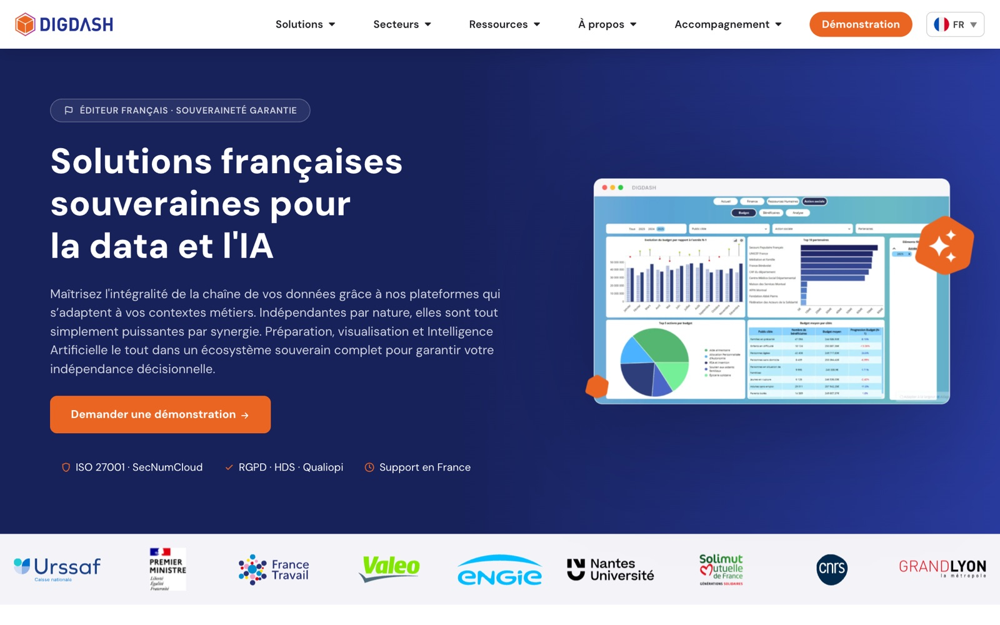
- Rôle
- Architecture · UX/UI · identité produit
- Livrables
- Maquettes Figma et composants d’intégration
- Collaboration
- Développeur WordPress
- Résultat visible
- Site actuel
Trouver son chemin avant de chercher.
L’ancien menu demandait au visiteur de deviner où se trouvait chaque sujet. « Solutions » mélangeait secteurs, produit, services, formation et cloud sur plusieurs niveaux.
- Constat
- Deux barres et des rubriques concurrentes compliquaient le balayage.
- Choix
- Cinq familles visibles : Solutions, Secteurs, Ressources, À propos et Accompagnement.
- Intention
- Regrouper par question du visiteur et rendre les destinations reconnaissables.
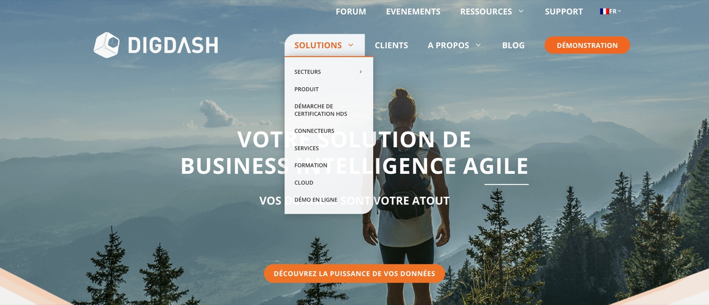
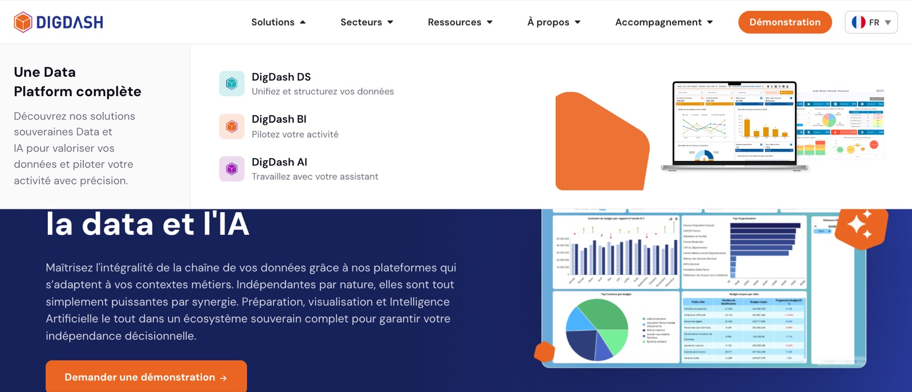
Architecture de l’information · loi de Jakob : des rubriques familières et des descriptions de produits donnent un meilleur indice de destination que la liste hétérogène « Solutions ».
L’arborescence, mise à plat.
Vue simplifiée des grandes entrées de navigation. Elle montre ce qui change de place et ce qui devient directement visible, sans représenter chaque page du site.
- Solutions
- Secteurs → 4 sous-pages au 3ᵉ niveau
- Produit · HDS · Connecteurs
- Services · Formation · Cloud
- Démo en ligne
- Clients
- À proposEntreprise · Carrières · Partenaires · Presse
- Blog
- Démonstration
- SolutionsDigDash DS · DigDash BI · DigDash AI
- SecteursPublic · Santé · Industrie et commerce · Banque…
- RessourcesBlog · Livres blancs · Témoignages · Événements
- À proposEntreprise · Partenaires · Carrières · Presse
- AccompagnementFormations · Services · Tutoriels · Forum · Documentation · Support
Montrer le produit dès l’accueil.
La première impression reposait sur une photographie d’ambiance. Elle ne disait rien de l’interface que DigDash vend.
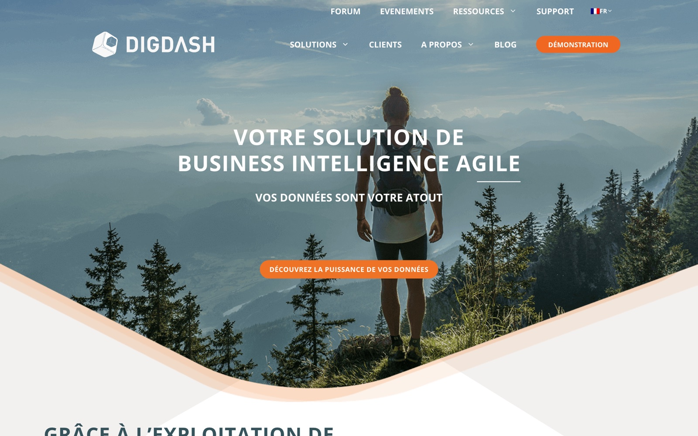
Hiérarchie visuelle : promesse, interface réelle et action de démonstration sont réunies dans le premier écran ; le visiteur peut relier le discours au produit montré.
Trois produits. Une famille.
Avec DataStack, BI et AI, DigDash ne présente plus une seule offre. J’ai créé une identité pour chacun des trois produits et conçu leur présentation commune.
Décision d’identité
- Un socle commun : les trois entrées appartiennent visiblement au même ensemble.
- Des repères distincts : icônes et couleurs permettent de différencier DS, BI et AI.
- Un rôle compréhensible : « unifier », « piloter » et « travailler avec l’assistant » expliquent chaque produit.
La capture montre les identités dans le menu livré ; les planches Figma pourront compléter cette vue du système.
Principes de similarité et de proximité : même forme d’icône et même emplacement pour les trois produits ; couleur et nom les distinguent sans rompre la famille.
Une page produit qui répond tout de suite.
Sur l’ancienne page, le nom du produit et son usage arrivaient après un grand bandeau photographique. La nouvelle page DigDash BI commence par la solution elle-même.
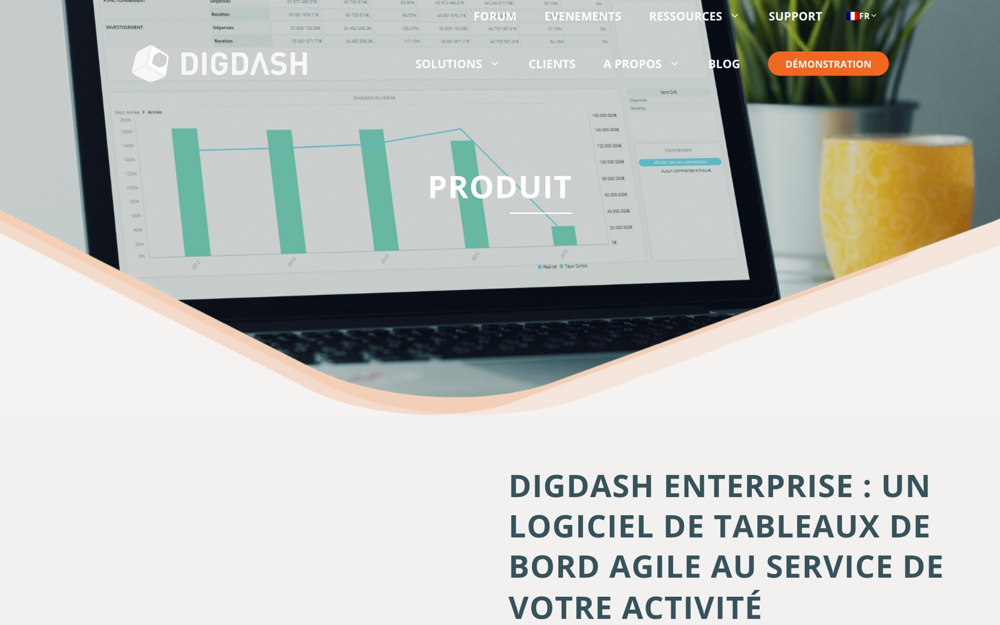
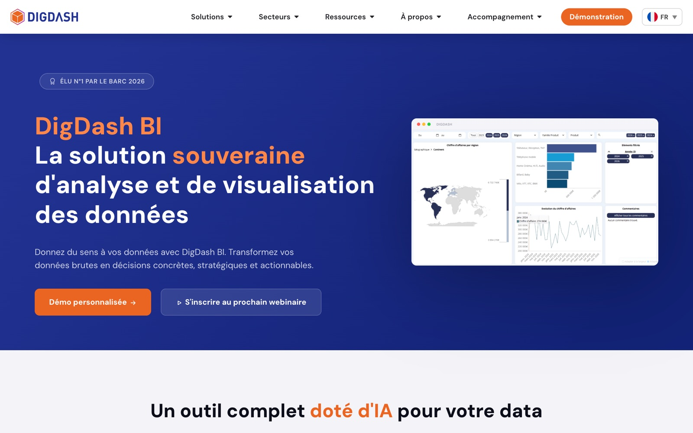
Loi de proximité : nom, fonction, aperçu et actions forment un même groupe de lecture. Le bouton de démo garde la priorité sur l’inscription au webinaire.
Les références à portée de vue.
Les filtres clients passent de listes déroulantes à des catégories directement visibles.
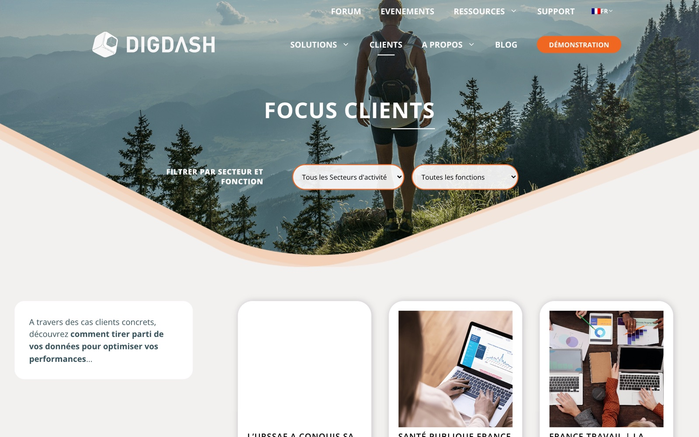
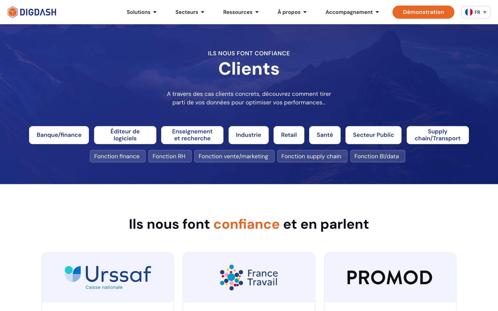
Reconnaissance plutôt que rappel : les secteurs et fonctions visibles permettent de repérer une catégorie sans ouvrir les deux listes déroulantes.
Le contenu avant le décor.
Sur les ressources, la navigation et les documents sont rapprochés du haut de page.
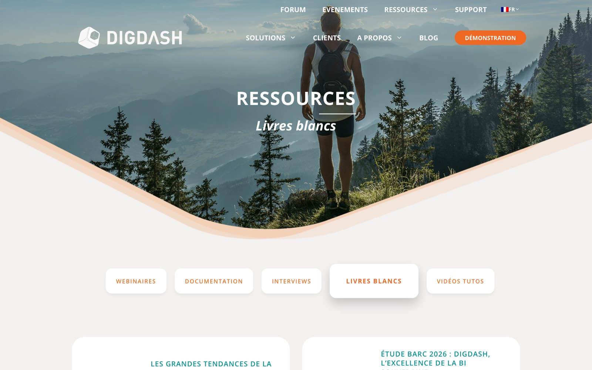
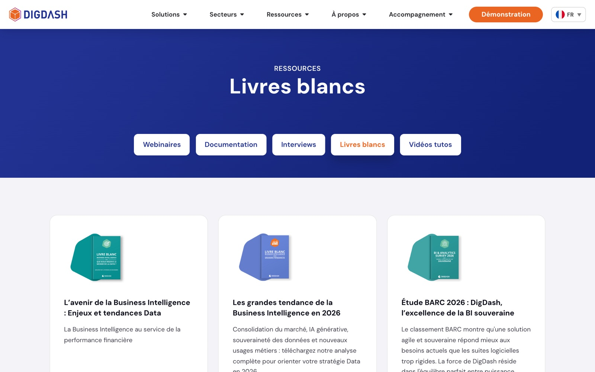
Priorisation du contenu : catégories et livres blancs remontent dans la zone visible ; le visuel d’ambiance occupe moins de place.
Prioriser sur mobile.
L’en-tête mobile passe de plusieurs icônes sans texte à une hiérarchie plus nette : marque, démonstration, langue et menu.
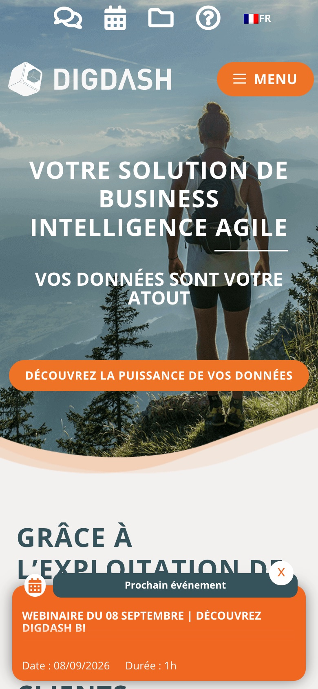
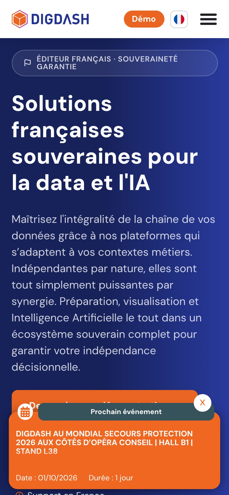
Loi de Fitts : « Démo » devient une cible large dans l’en-tête mobile. Son libellé rend l’action identifiable, là où les anciennes icônes demandaient une interprétation.
Du diagnostic à la livraison.
Le processus relie l’analyse de l’existant à des choix d’interface et à des composants exploitables par le développeur.
- Étape 1
Observer
Repérer les niveaux de navigation, la place du contenu et les points de friction visibles.
- Étape 2
Organiser
Redéfinir l’arborescence autour des besoins du visiteur et de la nouvelle famille de produits.
- Étape 3
Concevoir
Créer les identités DS, BI et AI, puis les maquettes et composants dans Figma.
- Étape 4
Transmettre
Livrer les maquettes et les composants au développeur chargé de l’intégration WordPress.
Ce que montre le résultat.
Le site livré présente désormais trois offres identifiables, une navigation structurée et des pages où le produit apparaît plus tôt. Ces comparaisons illustrent les choix de conception ; elles ne prétendent pas mesurer un gain de conversion ou d’usage.
Voir le site actuelPrincipes utilisés comme grille de lecture des captures : loi de Jakob, proximité, reconnaissance et loi de Fitts. Ces rapprochements explicitent les choix visibles ; ils ne remplacent pas une mesure auprès des utilisateurs.
La cohérence, page après page.
Quatre vues de plusQuatre autres vues montrent comment les mêmes choix se prolongent sur les pages de découverte, de contenu et de recrutement.
Page secteur public
Le contexte métier et l’action « Démonstration » apparaissent dès le premier écran.
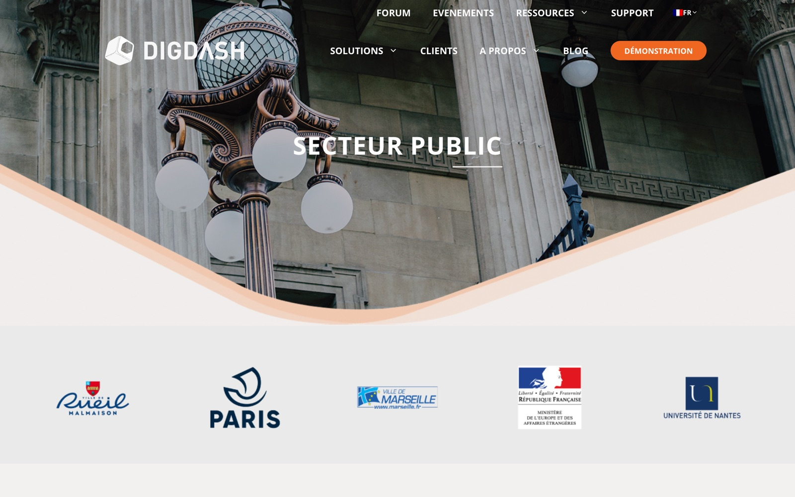
Avant 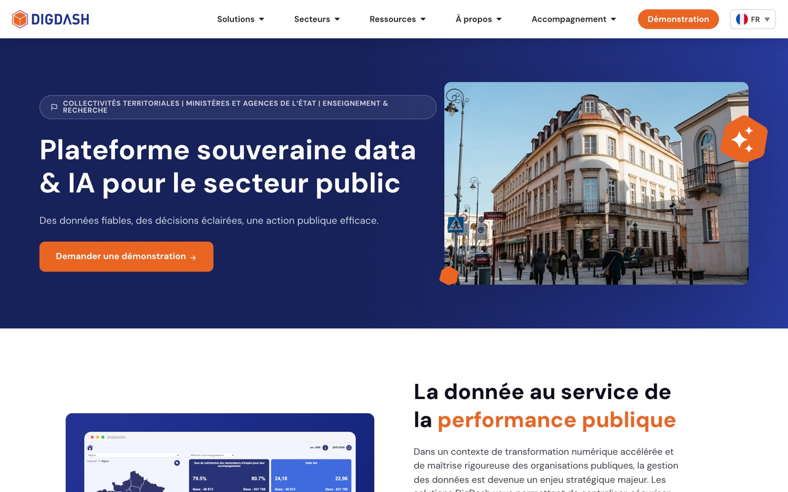
Après Accompagnement
Le service est formulé comme une aide concrète, avec une action de contact identifiable.
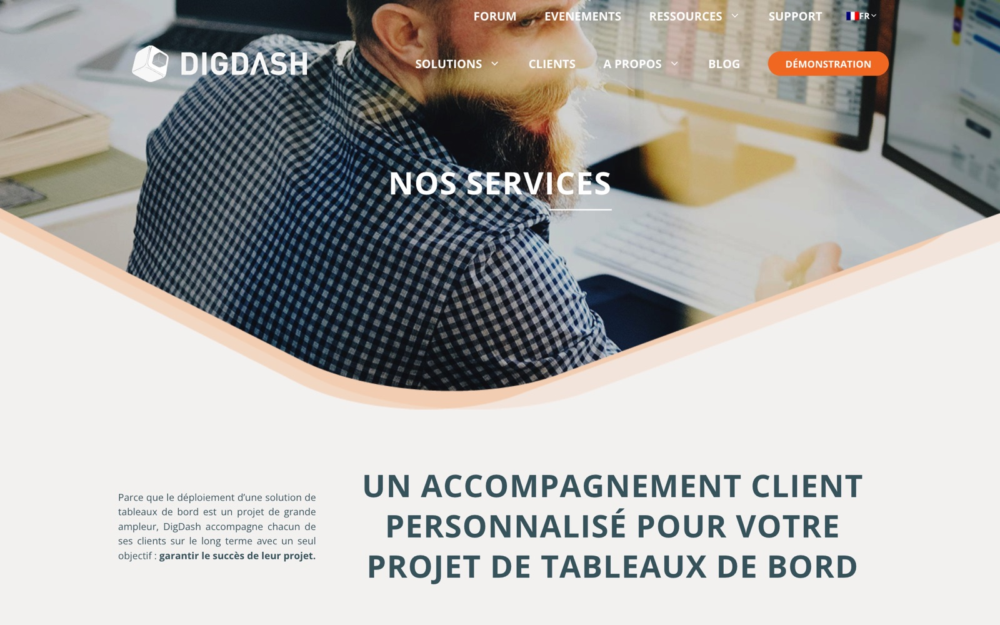
Avant 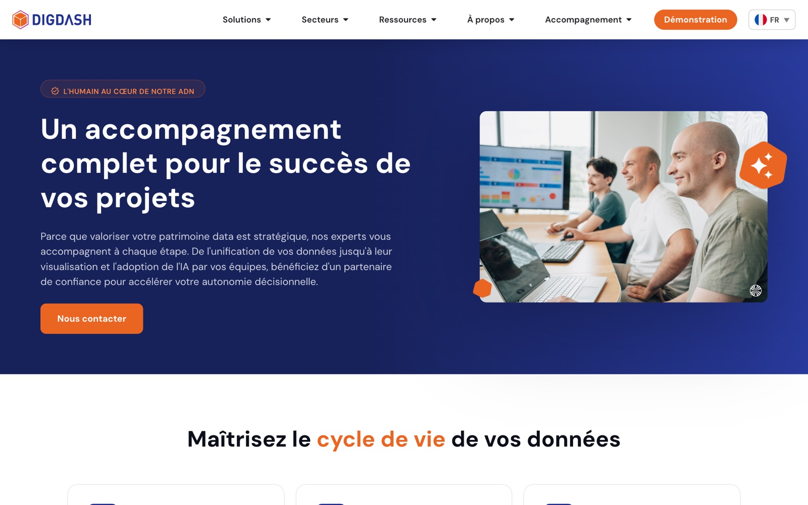
Après Blog
Les catégories sont visibles sans ouvrir de filtre, et les articles remontent dans la page.
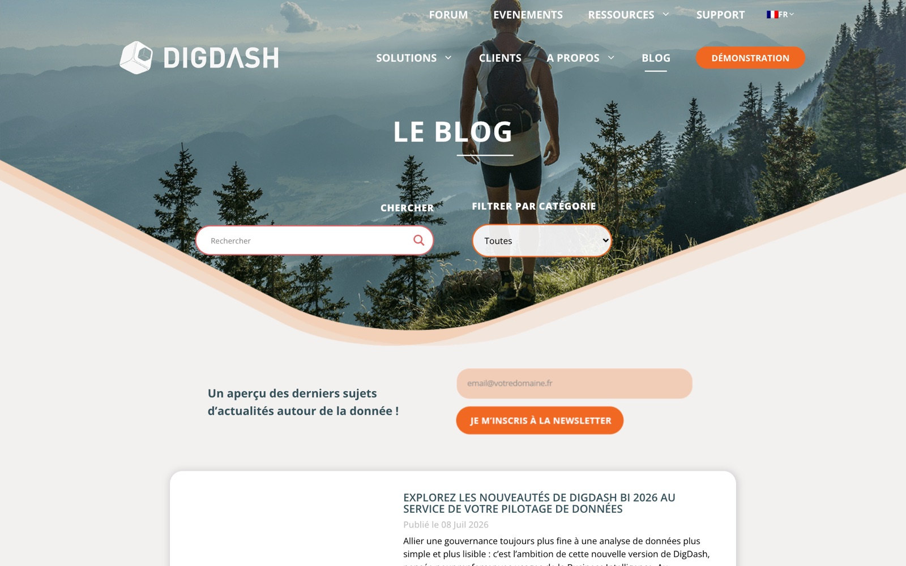
Avant 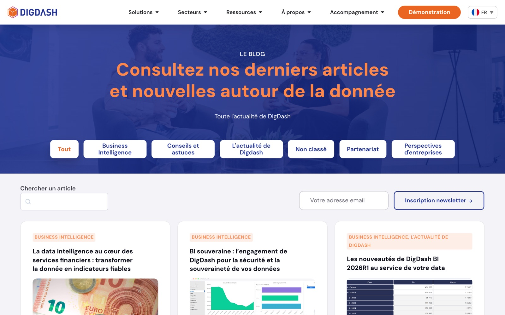
Après Carrières
L’offre d’emploi est accessible dès l’entrée, accompagnée d’une photo de l’équipe.
Avant 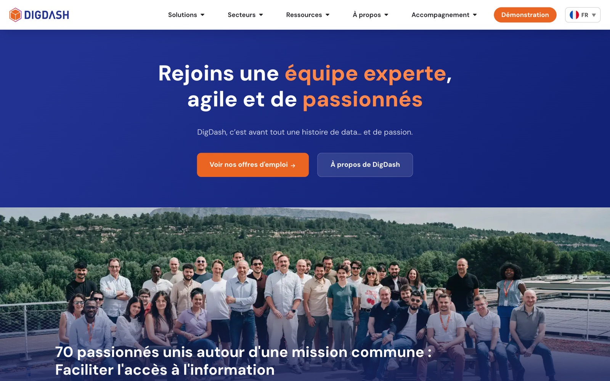
Après